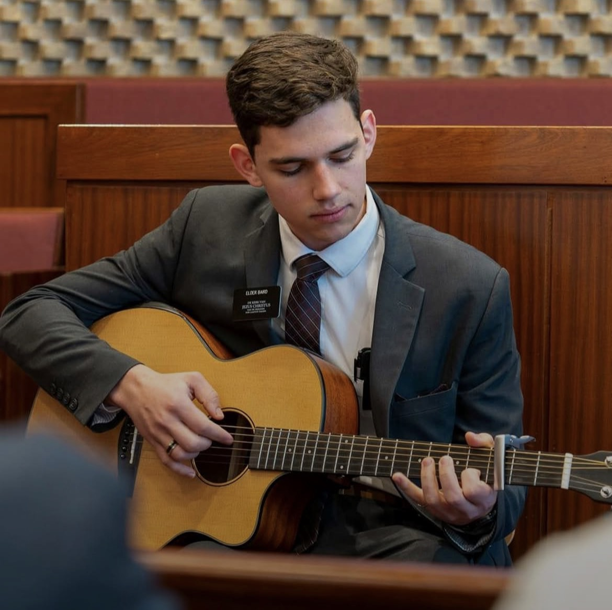
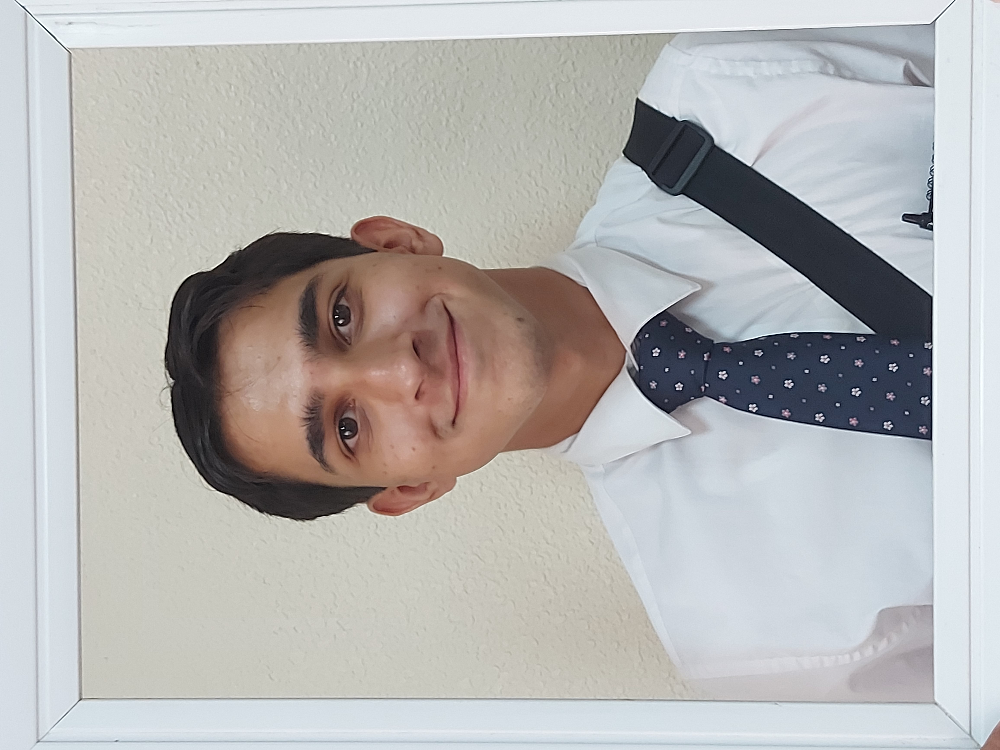
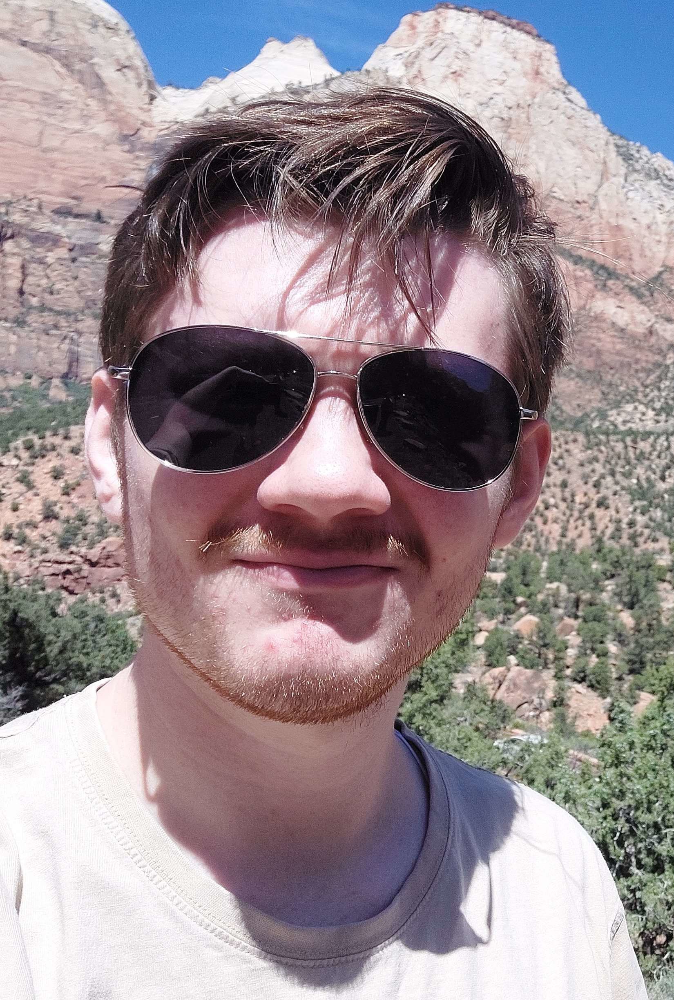

Joshua Baird
I’m a musician, programmer, and professional over-customizer of literally everything I own. I spend my time bouncing between coding projects, playing guitar and piano, singing, and tweaking my setup until I can manage everything on my computer without needing a mouse at all.

Jonathan Patten
I'm a computer science major studying at Brigham Young University Idaho. I'm a Filipino-American from California. I served a mission for the Church of Jesus Christ of Latter-day Saints in the Philippines Naga Mission. I prefer warm humid weather over cold dry weather. I enjoy reading Science-Fiction books.

Avery Martin
I am a computer science student from Athens, Georgia. I served \in the Arizona Tucson Mission. In my free time, I enjoy playing golf and ultimate frisbee. I also love spending time with my wife and traveling to visit family.

Austin Glenn
Hi! My name is Austin. I have a Ninja Dual Chamber Air Fryer 8 qt. I’m a ride-or-die Ford driver, and I’m pretty good with computers. I really enjoy going to the gym and working out to improve my physical fitness, as well as attending church service projects in my community.

Truman Rowe
I am a Computer Science Student at BYUI. I have lived on 4 continents and in 4 countries. I am a fan of history and the 19th & 18th centuries. I served a 2 year mission in the Australia Brisbane Mission. I am also an experienced traveler who has some experience as a tour guide.